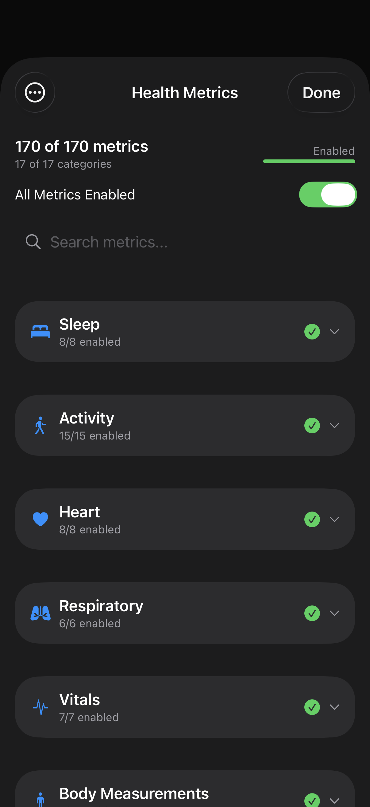

Health Metrics
Pick which of the 100+ HealthKit metrics across 17 categories you want exported. Search, toggle whole categories at once, or drill in for per-metric control.

Layout
Categories
17 HealthKit categories: Activity, Body Measurements, Cycle Tracking, Cycling, Hearing, Heart, Mindfulness, Mobility, Nutrition, Other Data, Respiratory, Running, Sleep, Symptoms, Vitals, Workouts, Swimming. Each row shows the on/off state and the live count of enabled metrics within it.
Tap a category to drill into its metrics. Each metric has its own toggle and HealthKit identifier. The dot color reflects whether HealthKit currently has data for that metric on this device.
Selection scope
Your metric selection drives everything:
- Daily exports — only enabled metrics appear in the file
- Individual Tracking — only enabled metrics get per-entry files
- Daily Note Injection — only enabled metrics merge into frontmatter
- Shortcuts — date-range exports use the same selection
Start narrow. Enable Sleep, Activity, and Heart. Run an export. See what the file looks like. Then add more categories. It's faster to add than to wade through a 50-line file with metrics you don't care about.